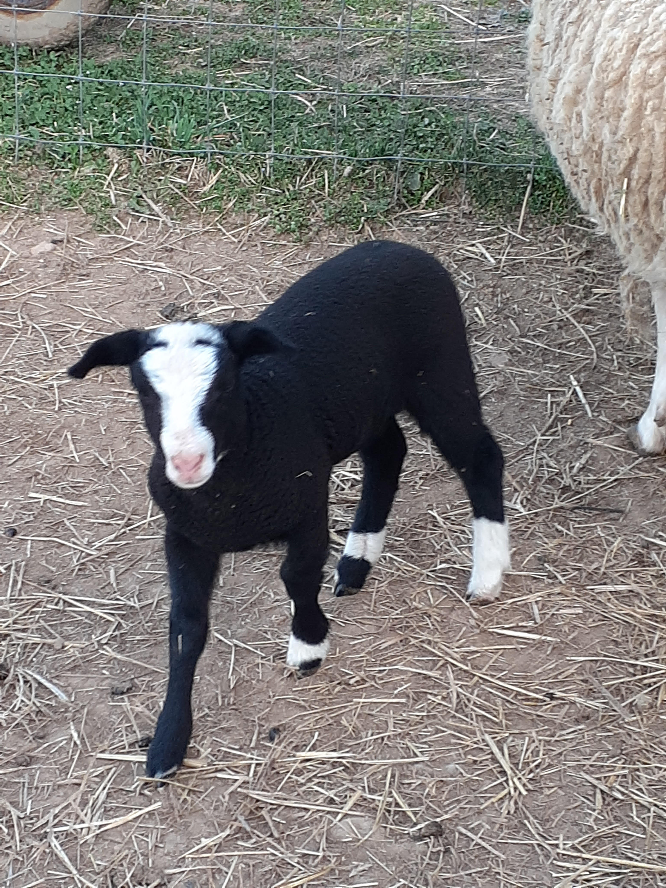

Shmeep List

Checklist for taking care of the sheep
Morning Checklist
-
Feed ram about 7-8 scoops of food from previous night's pre-hydrated
feed buckets.
-
Feed the rest of the sheep/ewes with the remaining feed in bucket
used in previous step.
- Ensure all water buckets are full.
Evening Checklist
-
Feed ram about 7-8 scoops of food from previous night's pre-hydrated
feed buckets.
-
Feed the rest of the sheep/ewes with the remaining feed in bucket
used in previous step.
-
Swap out milk bottles inside barn for lambs with full bottles. Make
sure that the slit in the rubber top is facing up, and is inline
with the offset part of bottle.
- Bring in old milk bottles, rinse out.
- Hydrate dry food buckets for next day (2 buckets).